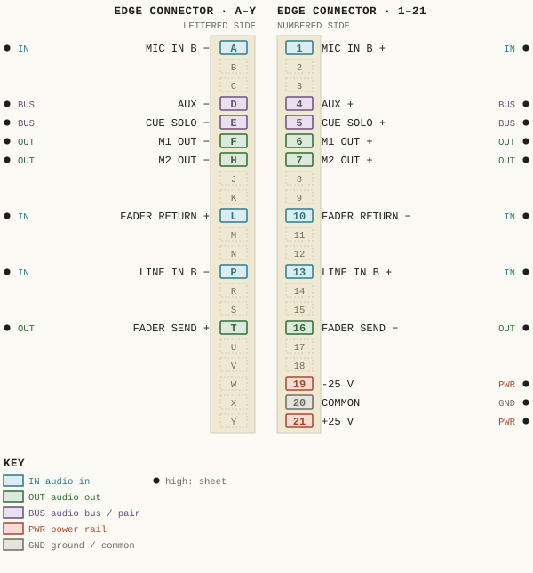
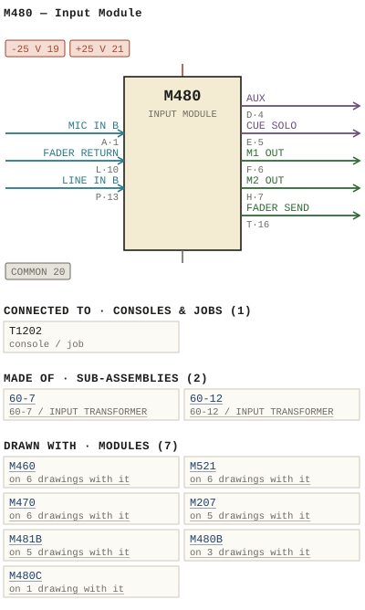

M480 — Input Module
| Type | module |
| Category | INPUT-PRE-AMPS |
| Try it | simulator & front panel · download package (zip) |
| Earliest dated evidence | 1975|8 — month & year |
| Evidence | "APR 75" in WBS Photos-1-001/2021-3-16-19-35-4.jpg |
| Confidence | medium |
| All years found | 1975|8 |
| Used in jobs | T1202 |
| Variants | M480A, M480B, M480C |
| Folder | DOCUMENTS/Done/Done - L1202A Console |
| Folder | DOCUMENTS/RAW Photos/2021 Information sheets |
| Folder | Modules/AMPLIFIERS/M481B |
Connections and circuit (ideal SPICE model)
Drawn live from its RTO-144 connections: run the generator, turn the gain, watch the VU. Open the netlist to see how the model is built.
Pictures


M480.pinout.svg

M480.connections.svg 1975 - 480-02-001 - INPUT MODULE - DRN DM - ISS 3.jpg
1975 - 480-02-001 - INPUT MODULE - DRN DM - ISS 3.jpg 1975 - M480 - 480-01-001 - W-IG INPUT MODULE.jpg
1975 - M480 - 480-01-001 - W-IG INPUT MODULE.jpg 1975 - M480 - 480-02-003 - INPUT MODULE.jpg
1975 - M480 - 480-02-003 - INPUT MODULE.jpg 1975 - M480 - 480-04-002 - INPUT MODULE.jpg
1975 - M480 - 480-04-002 - INPUT MODULE.jpg 1975 - M480 - 480-06-002.jpg
1975 - M480 - 480-06-002.jpg 1975 - M480 - IMG_9358.jpg
1975 - M480 - IMG_9358.jpg 1975 - M480 - IMG_9359.jpg
1975 - M480 - IMG_9359.jpg 1975 - M480 - IMG_9360.jpg
1975 - M480 - IMG_9360.jpg 1975 - M480 - Rack of 8 M480.jpg
1975 - M480 - Rack of 8 M480.jpg 1975 - M480 - Rack of 8 M480_small.jpg
1975 - M480 - Rack of 8 M480_small.jpg 1975 - M480 - wbsps - module - M480.jpg
1975 - M480 - wbsps - module - M480.jpg 1975 - M480 - wbsps - module - M480_small.jpg
1975 - M480 - wbsps - module - M480_small.jpg 1979 - 480-01-001 - M480B INPUT MODULE FUNCTIONAL DIAGRAM - DRN P. MAHONEY - ENG MRW - ISS 1 (2).jpg
1979 - 480-01-001 - M480B INPUT MODULE FUNCTIONAL DIAGRAM - DRN P. MAHONEY - ENG MRW - ISS 1 (2).jpg 1979 - 480-01-001 - M480B INPUT MODULE FUNCTIONAL DIAGRAM - DRN P. MAHONEY - ENG MRW - ISS 1 (3).jpg
1979 - 480-01-001 - M480B INPUT MODULE FUNCTIONAL DIAGRAM - DRN P. MAHONEY - ENG MRW - ISS 1 (3).jpg 1979 - 480-01-001 - M480B INPUT MODULE FUNCTIONAL DIAGRAM - DRN P. MAHONEY - ENG MRW - ISS 1.jpg
1979 - 480-01-001 - M480B INPUT MODULE FUNCTIONAL DIAGRAM - DRN P. MAHONEY - ENG MRW - ISS 1.jpg 1982 - 480-01-002 - M480C INPUT MODULE FUNCTIONAL DIAGRAM - DRN ML - ENG MRW - ISS 1.jpg
1982 - 480-01-002 - M480C INPUT MODULE FUNCTIONAL DIAGRAM - DRN ML - ENG MRW - ISS 1.jpg 19xx - DOC - 1202-02-011 - REDRAWN FOR.jpg
19xx - DOC - 1202-02-011 - REDRAWN FOR.jpg 19xx - DOC - RTO Racks Information Sheet.jpg
19xx - DOC - RTO Racks Information Sheet.jpg 19xx - 480-02-002 - INPUT MODULE - ISS 1.jpg
19xx - 480-02-002 - INPUT MODULE - ISS 1.jpg WBS M480 input pad - drawn by charlesaudio.ong.png
WBS M480 input pad - drawn by charlesaudio.ong.png 1982 - T1202 - IMG_5945.jpg
1982 - T1202 - IMG_5945.jpg 1975 - M480A - Schematic - Back Flipped (3).jpg
1975 - M480A - Schematic - Back Flipped (3).jpg 1977 - M1002 - 004.jpg
1977 - M1002 - 004.jpg 1977 - M1002 - 005.jpg
1977 - M1002 - 005.jpg 1977 - M1002 - 011 - M480 Pre-Amp.jpg
1977 - M1002 - 011 - M480 Pre-Amp.jpg 1982 - M480C - P23 - Schematic.jpg
1982 - M480C - P23 - Schematic.jpg 1980 - M480B - 480-01-001 - SOLO CONTROL PEAK EXTERNAL PEAK CALIBRATION.jpg
1980 - M480B - 480-01-001 - SOLO CONTROL PEAK EXTERNAL PEAK CALIBRATION.jpg 1982 - M480C - 480-01-002 - CUE-SOLO SOLO CONTROL CONTROL COMMON ISSU.jpg
1982 - M480C - 480-01-002 - CUE-SOLO SOLO CONTROL CONTROL COMMON ISSU.jpg 1980 - M480B - 480-02-003 - INPUT MODULE SCHEMATIC CHASSIS.jpg
1980 - M480B - 480-02-003 - INPUT MODULE SCHEMATIC CHASSIS.jpg 1980 - M480B - 480-04-002 - INPUT MODULE FRONT PANEL SCELE.jpg
1980 - M480B - 480-04-002 - INPUT MODULE FRONT PANEL SCELE.jpg 1982 - M480C - 480-04-006 - MABOC INPUT MODULE FRONT PANEL ISSE.jpg
1982 - M480C - 480-04-006 - MABOC INPUT MODULE FRONT PANEL ISSE.jpg 1980 - M480B - 480-06-002 - INPUT MODULE COMPONENT LAYOUT.jpg
1980 - M480B - 480-06-002 - INPUT MODULE COMPONENT LAYOUT.jpg 1982 - M480C - 480-06-004 - INPUT MODULE COMPONENT LAYOUT.jpg
1982 - M480C - 480-06-004 - INPUT MODULE COMPONENT LAYOUT.jpgPinout & connections
Each contact as its own documents name it: 19 named (19 high confidence). An empty slot is a contact no page names. Hover a contact for its source; the table under the drawing lists them.
pinout (SVG) · connections (SVG) · pins (JSON)
Pin evidence — 19 contacts
| Pin | Signal | Kind | Confidence | Read from | Source |
|---|---|---|---|---|---|
| A | MIC IN B | audio in | high | rto-144 | M480.rto144.json, p. 1 |
| 1 | MIC IN B | audio in | high | rto-144 | M480.rto144.json, p. 1 |
| D | AUX | audio bus / pair | high | rto-144 | M480.rto144.json, p. 1 |
| 4 | AUX | audio bus / pair | high | rto-144 | M480.rto144.json, p. 1 |
| E | CUE SOLO | audio bus / pair | high | rto-144 | M480.rto144.json, p. 1 |
| 5 | CUE SOLO | audio bus / pair | high | rto-144 | M480.rto144.json, p. 1 |
| F | M1 OUT | audio out | high | rto-144 | M480.rto144.json, p. 1 |
| 6 | M1 OUT | audio out | high | rto-144 | M480.rto144.json, p. 1 |
| H | M2 OUT | audio out | high | rto-144 | M480.rto144.json, p. 1 |
| 7 | M2 OUT | audio out | high | rto-144 | M480.rto144.json, p. 1 |
| L | FADER RETURN | audio in | high | rto-144 | M480.rto144.json, p. 1 |
| 10 | FADER RETURN | audio in | high | rto-144 | M480.rto144.json, p. 1 |
| P | LINE IN B | audio in | high | rto-144 | M480.rto144.json, p. 1 |
| 13 | LINE IN B | audio in | high | rto-144 | M480.rto144.json, p. 1 |
| T | FADER SEND | audio out | high | rto-144 | M480.rto144.json, p. 1 |
| 16 | FADER SEND | audio out | high | rto-144 | M480.rto144.json, p. 1 |
| 19 | -25 V | power rail | high | rto-144 | M480.rto144.json, p. 1 |
| 20 | COMMON also: COMMON (rto-144) | ground / common | high | rto-144 | M480.rto144.json, p. 1 |
| 21 | +25 V | power rail | high | rto-144 | M480.rto144.json, p. 1 |
Dates found in the documents
| Year | Kind | Text | File |
|---|---|---|---|
| 1975|8 | month & year | APR 75 |
1975 - 480-02-001 - INPUT MODULE - DRN DM - ISS 3.jpg |
Photos & scans (28)


Sub-assemblies & parts used (2)
| Item | What | Family | Year | How we know |
|---|---|---|---|---|
| 60-7 | 60-7 / INPUT TRANSFORMER | Input transformers (60-n) | 1968|1 | drawing filed with it |
| 60-12 | 60-12 / INPUT TRANSFORMER | Input transformers (60-n) | 1990|23 | named in its manual |
Consoles & jobs it is connected to (1)
Their own drawings name this module.
| Job | Year | Drawing | Page |
|---|---|---|---|
| T1202 | 1982 - T1202 - IMG_5945.jpg | 1 |
Named in other drawings & documents (7)
Drawings (26)
Each scan with its trace laid over it: the slider runs from the scan to the vector drawing. Click one to see it large and save it as SVG, DXF, KiCad, PDF or PowerPoint.
M480B / INPUT MODULE / FUNCTIONAL DIAGRAMviewer
M480B / INPUT MODULE / FUNCTIONAL DIAGRAMviewer
M480B / INPUT MODULE / FUNCTIONAL DIAGRAMviewer
Solo Control Peak External Peak Calibrationviewer

W/Ig Input Moduleviewer
Cue/Solo Solo Control Control Common Issuviewer
M480C / INPUT MODULE / FUNCTIONAL DIAGRAMviewer
Input Module Schematicviewer
M480 / INPUT MODULEviewer
Input Module Schematic Chassisviewer
Redrawn Forviewer
INPUT MODULEviewer
1975 - M480 - 480-06-002viewer
Input Module Component Layoutviewer
Input Module Component Layoutviewer
Input Module Front Panel Sceleviewer

Input Moduleviewer
Maboc Input Module Front Panel Isseviewer
BRACKET - TRANS. (60-7) MTG.viewer
Read from the drawing title blocks.
| Drawing | Title | Date | Drawn by | Checked by | Iss. | Source |
|---|---|---|---|---|---|---|
| B 480-03-005 | BRACKET - TRANS. (60-7) MTG. | 1975|8 | REB | 1 | file | |
| D 480-02-001 | M480 / INPUT MODULE | 1975|8 | DM | 3 | file | |
| B 480-01-001 | M480B / INPUT MODULE / FUNCTIONAL DIAGRAM | 1979|12 | P MAHONEY | 1 | file | |
| B 480-01-001 | M480B / INPUT MODULE / FUNCTIONAL DIAGRAM | 1979|12 | P MAHONEY | 1 | file | |
| B 480-01-001 | M480B / INPUT MODULE / FUNCTIONAL DIAGRAM | 1979|12 | P MAHONEY | 1 | file | |
| B 480-01-002 | M480C / INPUT MODULE / FUNCTIONAL DIAGRAM | 1982|15 | ML | 1 | file | |
| — | file | |||||
| 1202-02-011 | Redrawn For | JP | LTL | file | ||
| 480-01-001 | W/Ig Input Module | BW | 3 | file | ||
| 480-01-001 | Solo Control Peak External Peak Calibration | file | ||||
| 480-01-002 | Control Common | B | file p.23 | |||
| 480-01-002 | Cue/Solo Solo Control Control Common Issu | U | file p.23 | |||
| 480-01-002 | Cue/Solo Solo Control Control Common Issu | U | file | |||
| 480-02-003 | Input Module | 3 | file | |||
| 480-02-003 | Input Module Schematic Chassis | file p.25 | ||||
| 480-02-003 | Input Module Schematic Chassis | file | ||||
| 480-04-002 | Input Module | B | file | |||
| 480-04-002 | Input Module Front Panel | file p.23 | ||||
| 480-04-002 | Input Module Front Panel Scele | file | ||||
| 480-04-006 | Out Pad Sens Mic Ling Peak Ipgm | I | file p.22 | |||
| 480-04-006 | Maboc Input Module Front Panel Isse | E | file | |||
| 480-06-002 | Input Module Component Layout | KC | file p.26 | |||
| 480-06-002 | Input Module Component Layout | A | file | |||
| 480-06-004 | Iet Ecefl Issudate Revision | LLT | file p.25 | |||
| 480-06-004 | Input Module Component Layout | U | file | |||
| D 480-02-002 | INPUT MODULE | 1 | file |